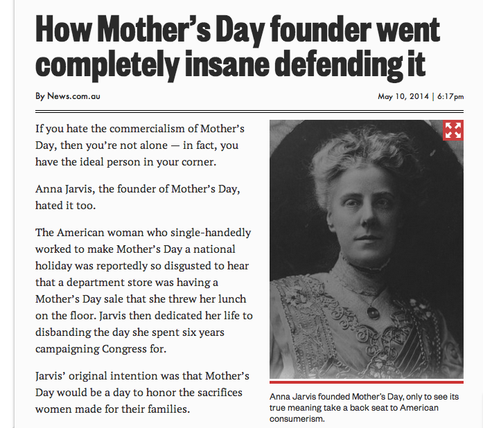

Today is the day we as a nation have chosen to set aside to honor you! Enjoy this website built by your son with love for this special occassion
You're probably thinking something like "hmm, mothersday.today, sounds pretty vague. and it says the website was made by a son, but whose son was it really? Isn't every man someone's son?"
That is certainly correct so let's get the proof out of the way first. Usually, it's in the pudding, but today it's in something called HTML. You don't have to worry about the details. Your name is Lorrie McGee. This website was made by your son Patrick McGee. He is very handsome and talented and wonderful, but today's not about him, it's about you. He just wanted to make sure you knew that he actually built this website for you and he's not trying to pull a fast one because he forget to buy a card.
Wikipedia offers a clear definition of the modern celebration of mother's day in America.
The celebration of Mother's Day began in the United States in the early 20th century; it is not related to the many celebrations of mothers and motherhood that have occurred throughout the world over thousands of years, such as the Greek cult to Cybele, the Roman festival of Hilaria, or the Christian Mothering Sunday celebration.
Mother's Day in America was started by a woman named Anna Jarvis, who, like many beleaguered mothers, was later driven insane.

That was back in 1908. Flash foward 82 years and it's 1990. I am born, thus officially making you a mother and eligible for this wonderful celebration.
So what does that mean for you? Many, many things. Today you get to:
Thank you, mom, for all of the awesome stuff you do!
Sometimes being a mom is a thankless job. You do a lot for us kids (all 4 of us) and it's not often that we really take the time to thank you for it and to let you know how much we appreciate you. Luckily, another mother in the distant past sacrificed her sanity so that 1 day out of the year we are all forced to do exactly that.
Have a wonderful day!